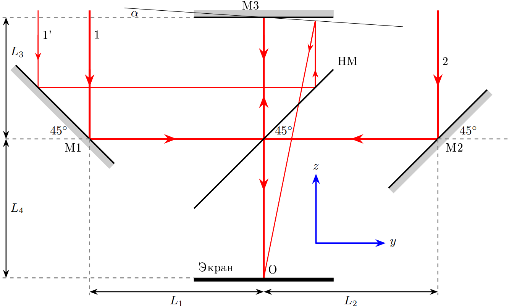
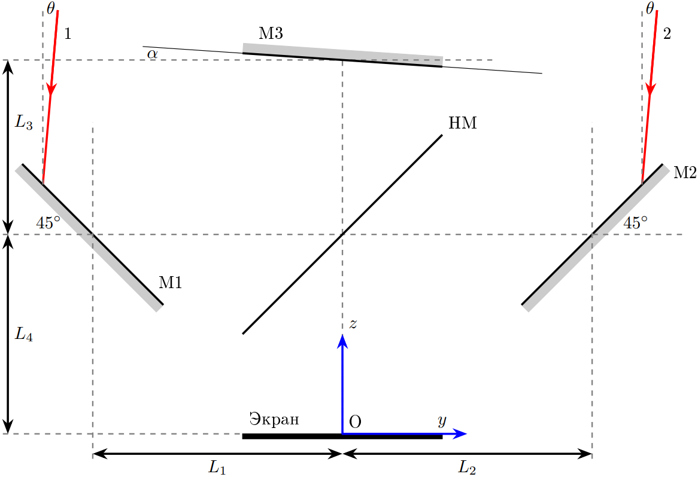
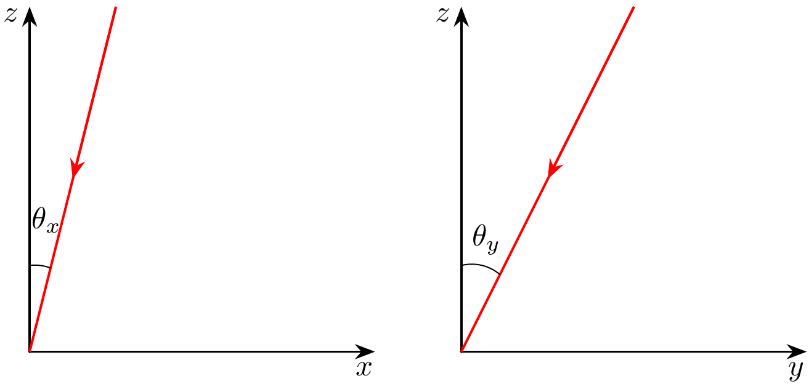
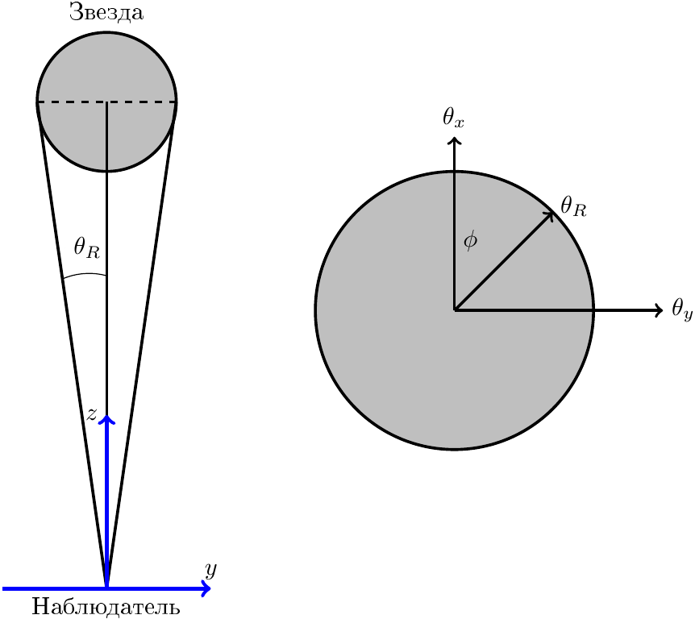

Y23 (2023) — English translation
Measuring the radii of stars is a difficult task due to the large distance to them. Irregularities in the atmosphere blur the image, making it difficult to determine their actual size. One possible method for measuring the radius of stars is to use an interferometer. This method was proposed by Michelson and Pease in 1921 to measure the diameter of Betelgeuse. The figure below shows a diagram of the interferometer used to measure the radius of the star.
Rice. 1. The path of light rays coming from a star.

Reflecting from the mirror M1, beam 1 hits the beam splitter HM, which reflects $50\%$ light in intensity and transmits the remaining $50\%$. The reflected beam hits the mirror M3, reflected from which it passes through HM and falls on the screen. At the same time, beam 2 is reflected from mirror M2. Reflected from HM, it also hits the screen. Consider that mirrors M1, M2, M3 reflect all the light incident on them, adding $\pi$ radians to its phase. The wavelength of the light used is $\lambda$.
Let the rays now fall on the interferometer at an angle $\theta\ll1$ to the $z$ axis in the $yz$ plane, as shown in the figure below. As in A2, mirror M3 is deflected by an angle $\alpha$. Note: Further, in all points of the problem, work only in a linear approximation when calculating optical paths, i.e. neglect terms containing factors $\alpha^2$, $\theta^2$, $\alpha\theta$, etc.
Note: Further, in all points of the problem, work only in a linear approximation when calculating optical paths, i.e. neglect terms containing factors $\alpha^2$, $\theta^2$, $\alpha\theta$, etc.
Fig. 2. Rays moving at an angle $\theta$ in the plane $yz$ and incident on the screen at point $O$.

If rays 1 and 2 fall on the screen at point $O$, the phase difference between them can be written as:\[\delta_{12}=\frac{2\pi}\lambda b\theta+\delta_O.\]
If ray 1' reflected from mirror M1 and ray 2' reflected from mirror M2 fall at the same point on the screen with coordinate $y$, the phase difference between them can be written as:\[\delta_{1'2'}=\frac{2\pi}\lambda b\theta+\delta_y.\]
Note: Further, in all points of the problem, you can use the statements of points B1-B4, even if they are not proven.
Let now rays 1'' and 2'' fall on the interferometer at an angle $\theta_x\ll1$ to the plane $yz$ and at an angle $\theta_y\ll1$ to the plane $xz$ (see Fig. 3).

So, let the ray ''1'' reflected from the mirror M1 and the ray ''2'' reflected from the mirror M2 fall at the same point on the screen on the axis $y$ at a distance $y$ from the point $O$.
Consider a star with angular radius $\theta_R$, which we need to determine. For simplicity, we will assume that the star radiates as a homogeneous disk, i.e. the intensity of light coming from the solid angle $\mathrm d\Omega=\mathrm d\theta_x\mathrm d\theta_y$ is equal to $\mathcal J\mathrm d\Omega$, where $\mathcal J$ is a constant value in any direction inside the star's disk. Let the interferometer (more precisely, the $z$ axis) be directed exactly to the center of the star. At $\alpha > 0$ an interference pattern will be observed on the screen. Let us denote the minimum and maximum intensities on the screen along the $y$ axis as $I_{y(min)}$ and $I_{y(max)}$, respectively. Let us introduce the visibility $V$ of the interference pattern as:\[V=\frac{I_{y(max)}-I_{y(min)}}{I_{y(max)}+I_{y(min)}}.\]
Let the interferometer (more precisely, the $z$ axis) be directed exactly to the center of the star. At $\alpha > 0$ an interference pattern will be observed on the screen. Let us denote the minimum and maximum intensities on the screen along the $y$ axis as $I_{y(min)}$ and $I_{y(max)}$, respectively. Let us introduce the visibility $V$ of the interference pattern as:\[V=\frac{I_{y(max)}-I_{y(min)}}{I_{y(max)}+I_{y(min)}}.\]
Fig. 4. Left: side view of the star and observer; right: view of the star's disk from the observation point.

Hint: the integral of some function $f(\theta_y)$, depending only on $\theta_y$, over the surface of a disk with radius $\theta_R$ can be represented as:\[I=\int\limits_{-\theta_R}^{\theta_R}\mathrm d\theta_y\int\limits_{-\sqrt{\theta^2_R-\theta^2_y}}^{\sqrt{\theta^2_R-\theta^2_y}}\mathrm d\theta_x~f(\theta_y)=\int\limits_{-\theta_R}^{\theta_R}\mathrm d\theta_y\cdot 2\sqrt{\theta^2_R-\theta^2_y}f(\theta_y).\]
The interferometer is used to observe Betelgeuse. If we symmetrically move mirrors M1 and M2 away from the center of HM $\Big($ so that $L_1^*=L_1+d/2$ and $L_2^*=L_2+d/2\Big)$, then the visibility of $V$ will be zeroed at $d=0.97~м,3.12~м,\ldots$ (the system parameters are the same as in B3). In this part of the problem, $L_1$ and $L_2$ are not given numerically, but $\lambda=500~\text{нм}$.
Hint: The first two zeros of the integral\[F_n=\int_0^1\left(1-w^2\right)^n\cos(\eta w)~\mathrm dw\]as a function of $\eta$ are given in the table below.
$n$ $\eta_1$ $\eta_2$ 0.5 3.832 7.016 0 4.493 7.725 1.5 5.136 8.417
Source: https://pho.rs/p/3485